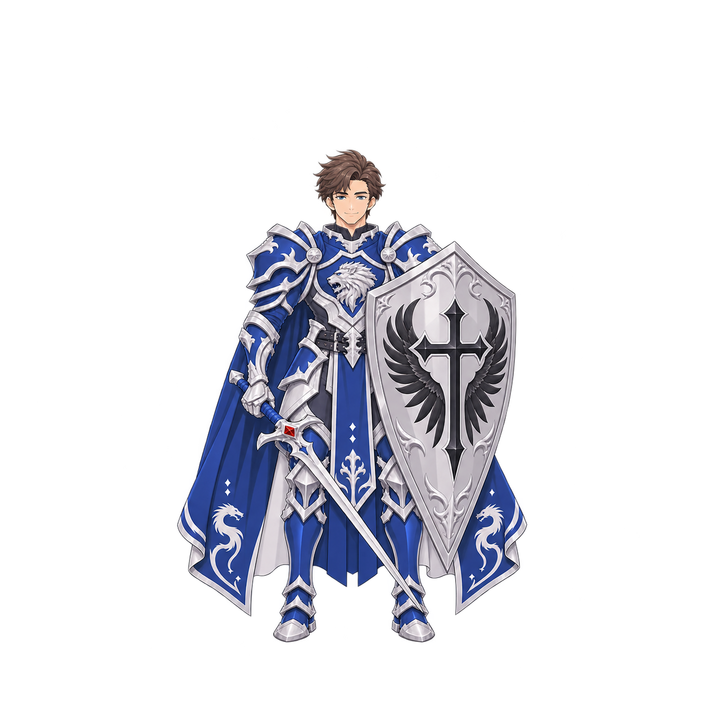
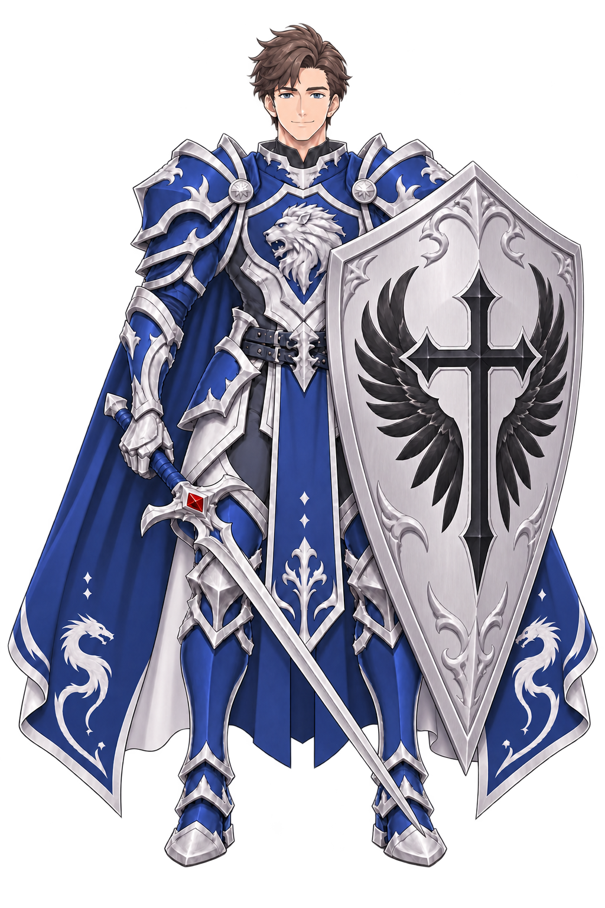

얼굴 비교 · 원본 배율
이전 v05

수정 v06
M02 · 남성 선화
C4 · 얼굴선
오른손 그립 · 원본 배율
실제 알파 경계 기준: 위 21.2% · 왼쪽 25.1% · 오른쪽 25.2% · 아래 8.9%. 정면 1장 수정본이며 측면·후면은 이전 v05 보관본입니다. 원본 PNG의 크기·바이트를 유지했습니다.
부드러운 성인 남성 얼굴과 청·은 갑주를 유지하면서 코·입 묘사를 간결하게 다듬었습니다. 인물·검·방패·망토 전체를 함께 줄여 장비 끝까지 여백 안에 들어오게 했습니다.
원본 PNG · 1254×1254 · 생성 프롬프트 · 캐릭터 제작 모음

얼굴 비교 · 원본 배율

오른손 그립 · 원본 배율
실제 알파 경계 기준: 위 21.2% · 왼쪽 25.1% · 오른쪽 25.2% · 아래 8.9%. 정면 1장 수정본이며 측면·후면은 이전 v05 보관본입니다. 원본 PNG의 크기·바이트를 유지했습니다.